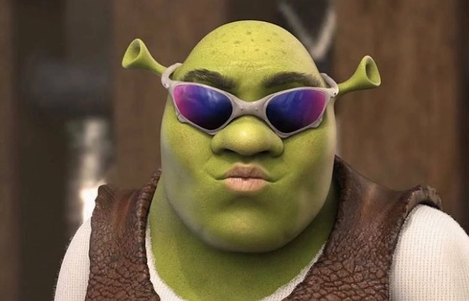

|  | SoundShreksA website for streaming the Shrek movie soundtracks Introducing the ultimate collection of Shrek movie soundtracks! For over two decades, the beloved animated series has captured the hearts of audiences worldwide with its quirky humor, heartwarming storylines, and memorable characters. And what better way to relive the magic of the films than through their iconic music? The first Shrek movie in 2001 to its final installment in 2010, the series has been known for its eclectic and fun music choices. The soundtracks are a mix of popular songs from different genres, ranging from rock to pop, reggae, and even classical music. Each movie has its own unique selection of songs that perfectly captures the tone and themes of the film. This collection features all the greatest hits from the Shrek movies, including Smash Mouth's "All Star" and "I'm a Believer," Counting Crows' "Accidentally in Love," Eels' "My Beloved Monster," and Jennifer Saunders' "Fairy Godmother Song." Other notable tracks include Bob Marley and The Wailers' "One Love," Heart's "Barracuda," and Led Zeppelin's "Immigrant Song." |
Shrek |
⭐⭐⭐⭐⭐ |
Shrek 2 |
⭐⭐⭐⭐⭐ | Shrek the Third |
⭐⭐⭐⭐⭐ |
Shrek Forever After |
⭐⭐⭐⭐⭐ |